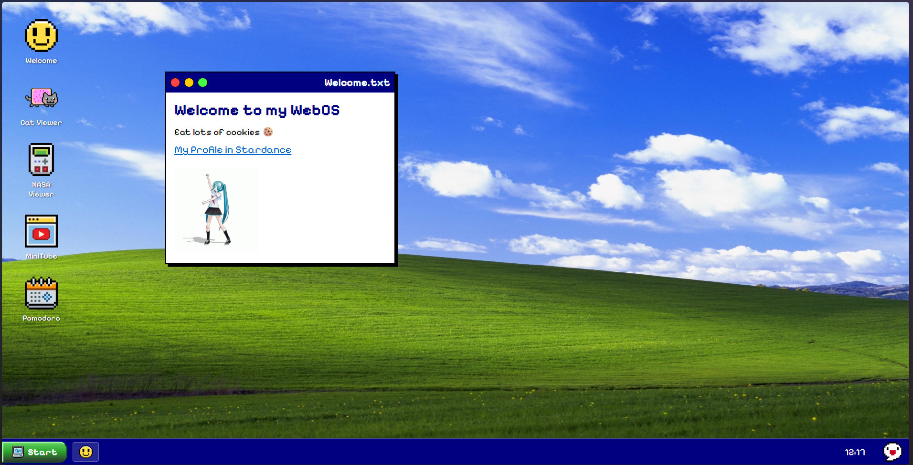
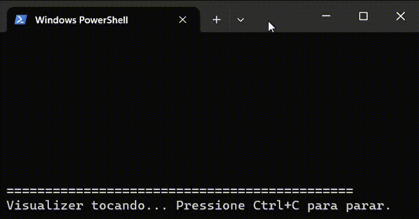

MyownWebOS
My Own WebOS is a small operating system that runs directly in the browser.

Console Audio Visualizer
A simple audio visualizer built in Python that displays microphone input in real-time directly in the terminal. The program generates animated bars that react to the captured audio, similar to music visualizers.
My First Slack Bot
This bot isn't slacking off — it replies to commands 24/7!